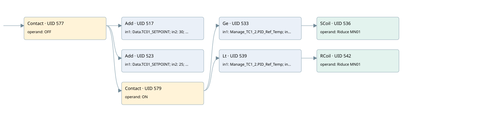

reduce speed mn01 se tc01 > 30°c the setpoint
burner control · 검색 색인 순서 11 · 원본 내부 NID 추정 10
백업 PLF 원본의 2689406 바이트 위치에서 복원한 XML. 검색 문서 1864의 객체 키 16102200df10000000000000와 연결했다. 이름 해석 14/14개. 남은 RefId는 상수 또는 미해석 참조다.
연결 구조 다시 그리기
원본 Part/PCon/Wire를 이용한 연결도다. TIA 화면의 래더 배치 또는 실행 결과를 재현한 그림은 아니다. 핀 연결은 아래 표와 원본 XML을 기준으로 읽는다. 노드 위에 마우스를 두면 피연산자 이름을 볼 수 있다.

접점·코일·블록과 피연산자
| Part UID | Gate | Negated 핀 | 연결 피연산자 |
|---|---|---|---|
| 577 | Contact | operand = OFF | |
| 517 | Add | in1 = Data.TC01_SETPOINT; in2 = 30; out = App02 | |
| 523 | Add | in1 = Data.TC01_SETPOINT; in2 = 25; out = App03 | |
| 579 | Contact | operand = ON | |
| 533 | Ge | in1 = Manage_TC1_2.PID_Ref_Temp; in2 = App02 | |
| 536 | SCoil | operand = Riduce MN01 | |
| 539 | Lt | in1 = Manage_TC1_2.PID_Ref_Temp; in2 = App03 | |
| 542 | RCoil | operand = Riduce MN01 |
접점 경로를 펼친 조건식
Contact·O/A·비교기의 원본 연결을 읽기 쉽게 펼친 보조 해석이다. POWER는 전원 레일 시작을 뜻한다. 호출 블록·에지·타이머의 내부 동작과 다중 쓰기 순서는 이 표로 실행 검증하지 않았다. 미해석 핀과 RefId는 원문 연결표에서 확인한다.
| UID | 동작 | 대상 | 원본 접점 경로 | 내용 |
|---|---|---|---|---|
| 536 | SCoil | Riduce MN01 | ((OFF AND ON) AND [Manage_TC1_2.PID_Ref_Temp >= App02]) | 조건 성립 시 Set |
| 542 | RCoil | Riduce MN01 | ((OFF AND ON) AND [Manage_TC1_2.PID_Ref_Temp < App03]) | 조건 성립 시 Reset |
원본 배선 연결
| Wire UID | 동일 Wire 연결 끝점 |
|---|---|
| 581 | Powerrail {} ↔ Part 577.in |
| 557 | ORef 543 (OFF) ↔ Part 577.operand |
| 578 | Part 577.out ↔ Part 517.en ↔ Part 523.en ↔ Part 579.in |
| 558 | ORef 544 (Data.TC01_SETPOINT) ↔ Part 517.in1 |
| 559 | ORef 545 (30) ↔ Part 517.in2 |
| 560 | Part 517.out ↔ ORef 546 (App02) |
| 561 | ORef 547 (Data.TC01_SETPOINT) ↔ Part 523.in1 |
| 562 | ORef 548 (25) ↔ Part 523.in2 |
| 563 | Part 523.out ↔ ORef 549 (App03) |
| 564 | ORef 550 (ON) ↔ Part 579.operand |
| 580 | Part 579.out ↔ Part 533.pre ↔ Part 539.pre |
| 565 | ORef 551 (Manage_TC1_2.PID_Ref_Temp) ↔ Part 533.in1 |
| 566 | ORef 552 (App02) ↔ Part 533.in2 |
| 567 | Part 533.out ↔ Part 536.in |
| 569 | ORef 553 (Riduce MN01) ↔ Part 536.operand |
| 570 | ORef 554 (Manage_TC1_2.PID_Ref_Temp) ↔ Part 539.in1 |
| 571 | ORef 555 (App03) ↔ Part 539.in2 |
| 572 | Part 539.out ↔ Part 542.in |
| 574 | ORef 556 (Riduce MN01) ↔ Part 542.operand |
식별자 해석 근거 14개
| ORef UID | RefId | 이름 | IdentXmlPart 파일 | 해석 방법 |
|---|---|---|---|---|
| 543 | 80 | OFF | 0582-IdentXmlPart.xml | UID/RID + search-text + NID agreement |
| 544 | 59 | Data.TC01_SETPOINT | 0585-IdentXmlPart.xml | UID/RID + search-text + NID agreement |
| 545 | 82 | 30 | 0586-IdentXmlPart.xml | literal candidate: UID/RID/NID + nearby named declarations + search-text agreement |
| 546 | 83 | App02 | 0583-IdentXmlPart.xml | UID/RID + search-text + NID agreement |
| 547 | 59 | Data.TC01_SETPOINT | 0585-IdentXmlPart.xml | UID/RID + search-text + NID agreement |
| 548 | 85 | 25 | 0586-IdentXmlPart.xml | literal candidate: UID/RID/NID + nearby named declarations + search-text agreement |
| 549 | 86 | App03 | 0583-IdentXmlPart.xml | UID/RID + search-text + NID agreement |
| 550 | 1 | ON | 0582-IdentXmlPart.xml | UID/RID + search-text + NID agreement |
| 551 | 242 | Manage_TC1_2.PID_Ref_Temp | 0585-IdentXmlPart.xml | UID/RID + search-text + NID agreement |
| 552 | 83 | App02 | 0583-IdentXmlPart.xml | UID/RID + search-text + NID agreement |
| 553 | 87 | Riduce MN01 | 0582-IdentXmlPart.xml | UID/RID + search-text + NID agreement |
| 554 | 242 | Manage_TC1_2.PID_Ref_Temp | 0585-IdentXmlPart.xml | UID/RID + search-text + NID agreement |
| 555 | 86 | App03 | 0583-IdentXmlPart.xml | UID/RID + search-text + NID agreement |
| 556 | 87 | Riduce MN01 | 0582-IdentXmlPart.xml | UID/RID + search-text + NID agreement |
검색 코드 보조 자료
참조 명칭을 찾기 위한 자료이며 실행 순서나 AND/OR 관계는 위 연결표로 확인한다.
"off" add "data".tc01_setpoint 30 add "data".tc01_setpoint 25 #app03 "on" "manage_tc1_2".pid_ref_temp #app02 "riduce mn01" "manage_tc1_2".pid_ref_temp #app03 "riduce mn01" #app02